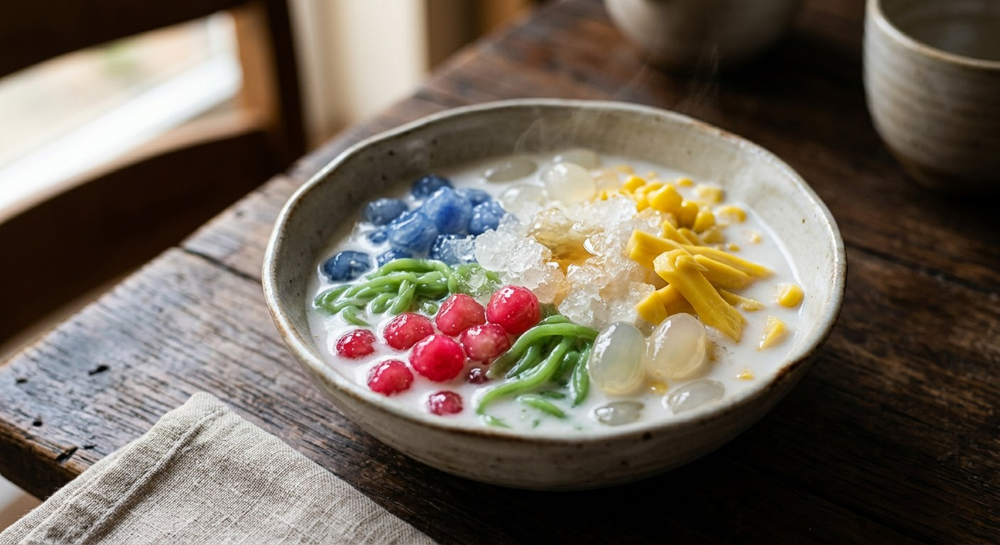

Every Thai dessert stall's finale: three kinds of chewy jelly, jackfruit, palm seeds and sweetcorn in fresh coconut milk, with pandan syrup poured over each bowl and crushed ice on top.

รวมมิตร translates bluntly: "mixed together". The name is the method — a medley of Thai sweets assembled per bowl, never cooked as one. ครัวบ้านพิม's Pantip thread pitches it as the hot-season dessert — "sweet, cold, fragrant" — and builds it the old way: three kinds of jelly made at home, each from a different colour and flavour. Lod chong singapore, the green pandan noodles; krong krang kaew, the glassy butterfly-pea drops; and tab tim grob, the red "pomegranate rubies" of diced water chestnut rolled in tapioca starch. Around them, the supporting cast: shredded ripe jackfruit, luk chit palm seeds and boiled sweetcorn, all in fresh coconut milk.
The finish is two-part, and that is the detail that matters. The coconut milk goes in unseasoned; the sweetness arrives separately as น้ำเชื่อม — a white-sugar syrup simmered with pandan leaves, and in ครัวบ้านพิม's version scented with jasmine-steeped water — poured over each bowl to taste, then crushed ice on top. Dailynews' vendor feature, from the ช่องทางทำกิน column, reduces the syrup by a third to concentrate the pandan, and reveals the modern shortcut: ready-made pieces now sit in every Thai market, so the stallholder's work is mostly assembly.
The other schools diverge from there. Kapook's home cook makes the dough from tapioca starch alone — hot water and food colouring, no pandan, no rice flour — folds sago into the mix, and sweetens and salts the coconut milk itself. Wongnai's shortcut goes further still: no jelly at all, just ginkgo nuts, taro and red beans simmered in sweetened coconut milk with sesame on top — a fifteen-minute bowl that shares the stall version's name and none of its work.
| Thai | English | Amount |
|---|---|---|
| แป้งมันสำปะหลัง + แป้งข้าวเจ้า + น้ำใบเตยคั้น | Lod chong singapore (pandan noodles): tapioca starch + rice flour + pandan juice | ½ cup + 2½ tbsp + ⅓ cup |
| แป้งมันสำปะหลัง + แป้งข้าวเจ้า + น้ำอัญชัน | Krong krang kaew (butterfly-pea drops): tapioca starch + rice flour + butterfly pea juice | ½ cup + 2½ tbsp + ⅓ cup |
| แห้วดิบหั่นเต๋า + แป้งมันสำปะหลัง + น้ำหวานสีแดง | Tab tim grob (water-chestnut rubies): diced raw water chestnuts + tapioca starch + red syrup | 1 cup + 1 cup + 3 tbsp |
| ขนุนสุกฉีกเป็นชิ้น | Ripe jackfruit, shredded | 1 cup |
| ลูกชิด | Luk chit (palm seed / attap seed) | 1 cup |
| ข้าวโพดเหลืองต้มแกะเม็ด | Boiled yellow sweetcorn kernels | 1 cup |
| กะทิสด | Fresh coconut milk (or 2 large boxes of candle-smoked UHT) | 2 litres |
| น้ำตาลทรายขาว + น้ำลอยดอกมะลิ + ใบเตยหอมมัดรวม | Syrup: white sugar + jasmine-scented water + pandan leaves, tied | 4 cups + 2 cups + 7 leaves |
| น้ำแข็งป่น | Crushed ice | As liked |
The shortcut batch (Dailynews, โชฎิรส): ready-made pieces from the market, luk chit, cubed agar jelly, shredded jackfruit, corn — boxed candle-smoked coconut milk (อบควันเทียน), and the syrup simmered down to two-thirds. Kapook's single-dough version: 500 g tapioca starch kneaded with 250 ml boiling water and food colouring, split four ways into krong krang and lod chong, plus 150 g sago — all in a salted-sweet sauce of 400 ml coconut milk, 600 ml water, 200 g sugar and ¼ tsp salt. Wongnai's no-jelly bowl: ginkgo nuts, taro (boiled about 20 minutes, cubed) and red beans simmered in coconut milk with sugar and salt, finished with black and white sesame (see the disagreement below).
The dough. ครัวบ้านพิม's pieces are tapioca starch plus rice flour, tinted with real pandan juice and butterfly-pea infusion. Kapook's are tapioca starch alone, hot water and food colouring — no rice flour, no pandan. The rice flour keeps the noodles distinct once cooked; the colouring keeps the work to ten minutes.
Ready-made or home-made. Dailynews' vendor buys the pieces — every Thai market stocks them, and the column says so outright. ครัวบ้านพิม and Kapook make their own. Wongnai skips the jellies entirely and builds the bowl from beans and roots.
Where the sweet and salt live. Kapook and Wongnai season the coconut milk itself with sugar and salt. ครัวบ้านพิม and Dailynews leave the milk unseasoned and pour a separate syrup over each bowl — sweetness is set per person, at the table.
The syrup. ครัวบ้านพิม scents it with jasmine-steeped water, น้ำลอยดอกมะลิ; Dailynews uses plain water and pandan and reduces it by a third. Kapook's version has no syrup at all — the coconut sauce carries everything.
The coconut milk. ครัวบ้านพิม uses fresh coconut milk; Dailynews swears by boxed candle-smoked coconut milk (อบควันเทียน), whose smoky-sweet note survives the chill. Both warm it briefly, then cool it before it meets the bowl.
This recipe is translated from the following Thai-language sources. Where they disagree, we've said so.
1. Pantip — "[CR] [ครัวบ้านพิม] ขนมไทยคลายร้อน 'รวมมิตรน้ำกะทิ' หวาน ๆ เย็น ๆ หอม ๆ มาลองทำกันดูค่ะ" (the recipe used here) — pantip.com
2. Dailynews, ช่องทางทำกิน column — "'รวมมิตรน้ำกะทิ' หอมมัน สูตรลัดทำขาย..กำไรงาม!!" by เชาวลี ชุมขำ (the market-stall shortcut and the syrup reduction) — dailynews.co.th
3. Kapook — "ขนมรวมมิตร ใส่สาคูนุ่มละมุนหวานเย็นชื่นใจ" by sujitrar, Pantip member (the one-dough version with sago) — cooking.kapook.com
4. Wongnai — "น้ำกะทิรวมมิตร 🥥" by guneweenz (the no-jelly shortcut with ginkgo, taro and red beans) — wongnai.com